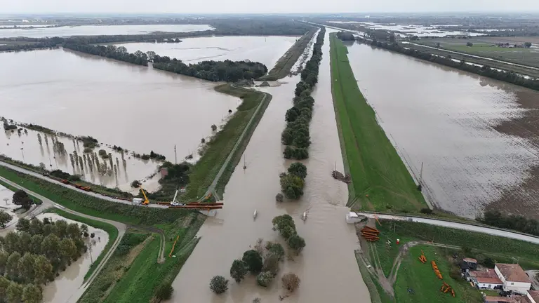
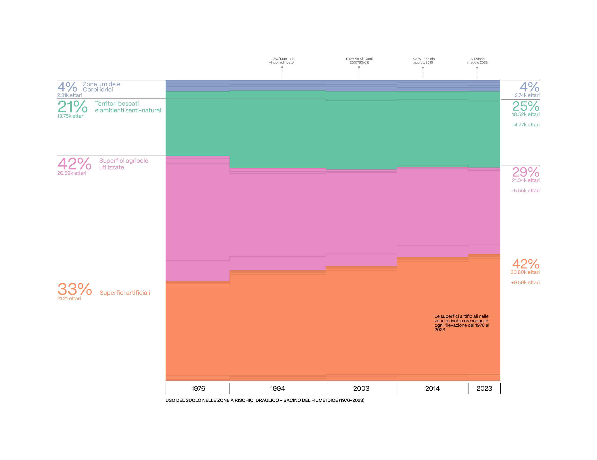
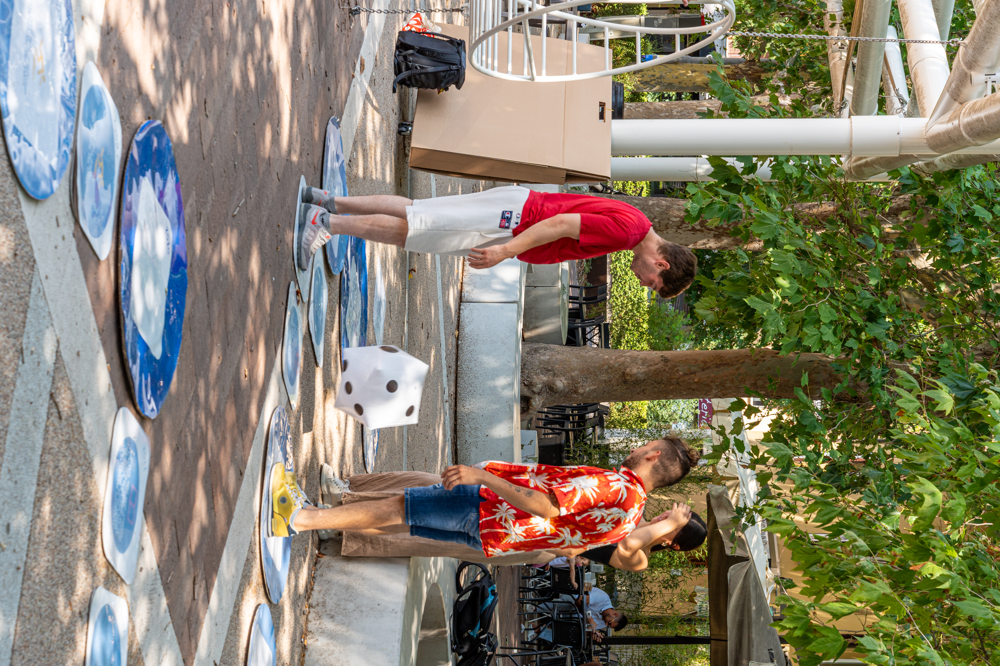
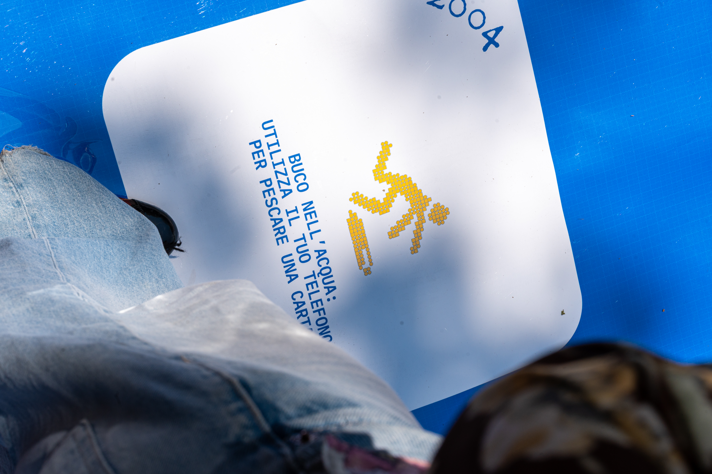

"Hole in the water" is a participatory game-based installation that communicates hydrogeological risk in the Idice river basin through a physical-digital board game. Designed for Piazza Bracci, San Lazzaro di Savena, it combines scientific data, widespread misconceptions, and game mechanics to turn participants from spectators into active protagonists.
The project responds to the need to communicate a complex phenomenon like hydrogeological risk to a non-specialist audience, moving beyond a purely informational approach. The starting point was an analysis of the Idice river basin, an area affected by recent flood events (October 2024, May 2023), cross-referencing physical territorial data — sourced from ARPAE and IdroGEO (ISPRA) — with citizens' perception of risk.
Three complementary datasets were selected: rainfall trends in San Lazzaro di Savena from 1995 to 2025, showing that risk depends more on rainfall intensity than total quantity; land use in flood-prone areas, documenting the growth of artificial surfaces from 33% to 42% between 1976 and 2023; and a survey on perceived causes of flooding, which revealed beliefs often inconsistent with scientific evidence.


To actively engage participants, the team chose a gamification approach inspired by street games and traditional path-based games, such as the Italian "gioco dell'oca." Movement is determined by a dice roll, with cells alternating between play, learning, and unpredictability. The board is also conceived as a data physicalisation, translating average annual rainfall into a tangible, walkable form.
The game takes place in the square on a path of floor modular cells, crossed by rolling a giant dice. Scanning a QR code gives access to a deck of digital cards from a smartphone. On "Buco nell'Acqua" cells, the player draws a True/False card on a common flood myth, moving forward or back depending on the answer. The other cells display data, facts, and events related to the territory. The game is won by clearing the final "Buco nell'Acqua" cell.

